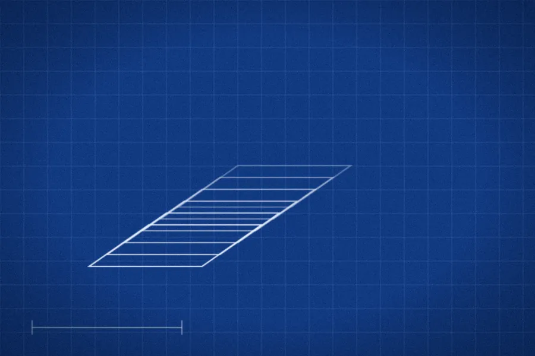
پروژهٔ شاخص
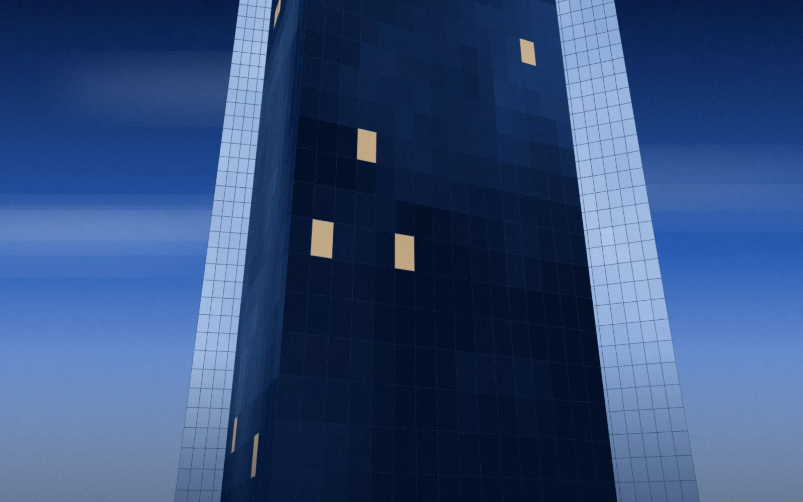
مهندسی و معماری سازمانی· ۱۴۰۴
مجتمع اداری سپهر؛ بازطراحی فضای کار و عملیات ساختمان
مدیریت طراحی، نظارت و راهاندازی یک مجتمع ۴۲ طبقه با کاهش ۲۸ درصدی هزینهٔ بهرهبرداری (نمونه).
مشاهدهٔ پروژهمشاورهٔ راهبردی و مهندسی سازمانی
آبیرا در کنار مدیران و تیمهای فنی، مسیر رشد را از شناخت دقیق وضعیت امروز تا اجرای مرحلهبهمرحله و پشتیبانی پس از تحویل، شفاف و قابلاندازهگیری میکند.
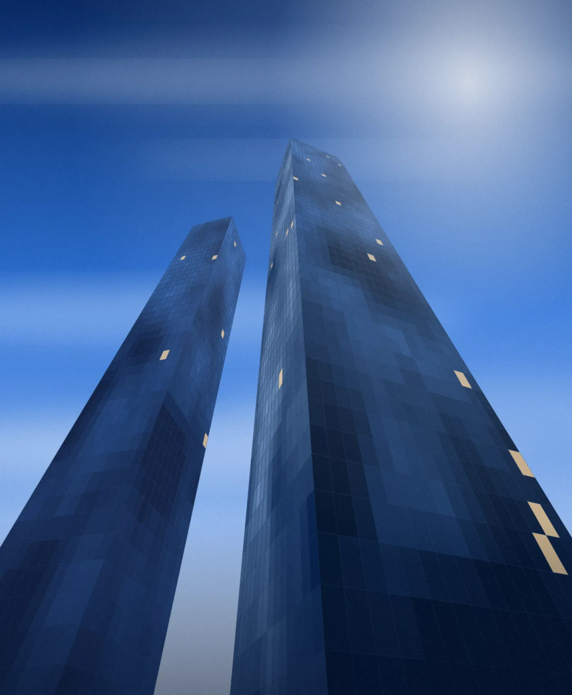
برج اداری سپهر — پروژهٔ نمونه۰۱ اعتبار
بیش از یک دهه همکاری با سازمانهایی که برای تصمیمهای بزرگشان، گزارش دقیق و پاسخگویی مستمر میخواهند.
گزارش هفتگی، شاخصهای روشن و تصمیمهای ثبتشده.
مشاور، مهندس و مدیر پروژه در یک تیم یکپارچه.
هر پروژه با معیار موفقیت مشخص آغاز میشود.
نمونهای از مشتریان (نامهای فرضی برای دمو)
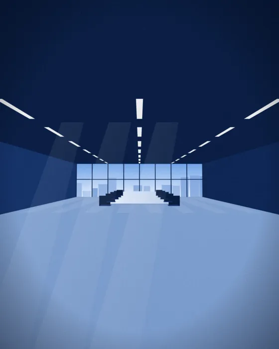
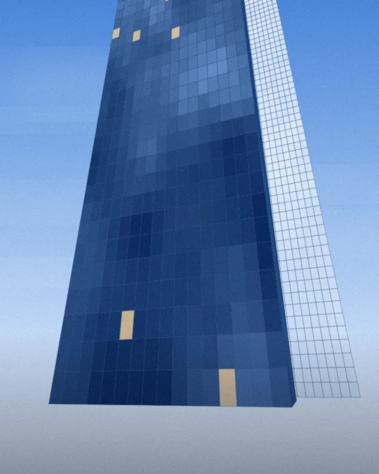
تحلیل پیش از وعده؛ اجرا پیش از گزارش.
۰۲ دربارهٔ آبیرا
آبیرا مجموعهای از مشاوران، مهندسان و تحلیلگران است که با سازمانها کار میکند تا ایدههای بزرگ را به برنامههای اجرایی دقیق تبدیل کنند. ما نه به نمایش وعدهها، بلکه به کیفیت جزئیات و پاسخگویی پس از تحویل باور داریم.
تصمیمها بر پایهٔ داده و مستندات گرفته میشوند.
تیم ما بخشی از تیم شماست، تا روز تحویل و پس از آن.
۰۳ خدمات
از طراحی راهبرد تا اجرای پروژههای مهندسی و فناوری، خدمات آبیرا یک زنجیرهٔ پیوسته است.
تحلیل بازار و توان سازمان، تدوین نقشهٔ راه و تعریف شاخصهای موفقیت برای تصمیمهای کلان.
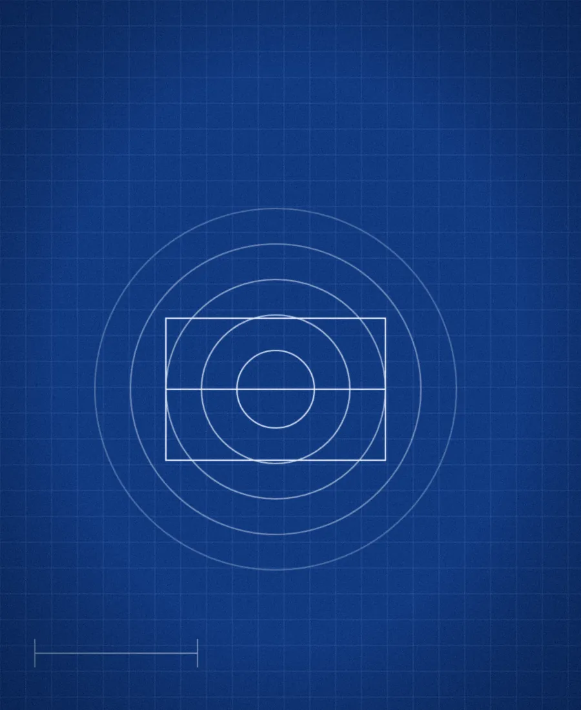
از مطالعات امکانسنجی تا نظارت عالیه بر ساخت ساختمانهای اداری، صنعتی و زیرساختی.
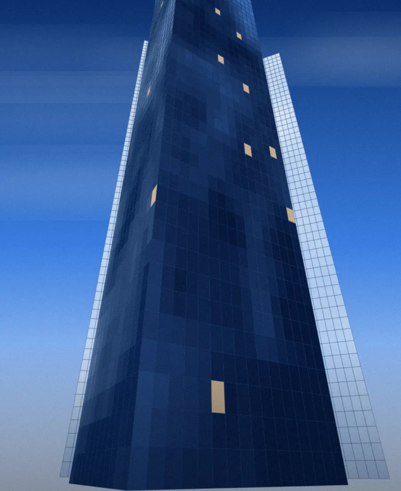
معماری سامانهها، زیرساخت ابری و امنیت؛ با اجرای تدریجی و بدون توقف عملیات جاری.
نقشهبرداری فرایندها، حذف هدررفت و ساخت داشبوردهایی که تصمیمگیری روزانه را ساده میکنند.
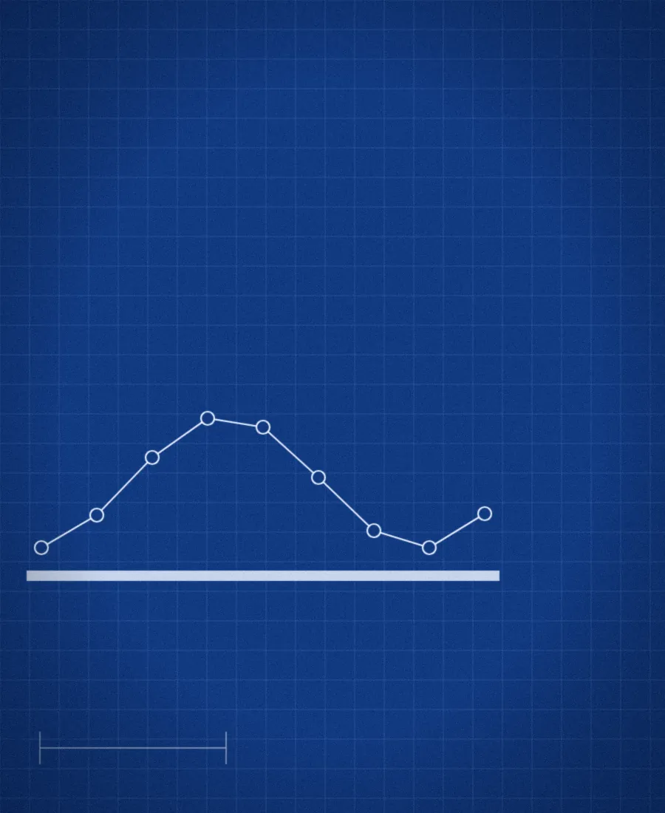
برنامههای آموزشی کاربردی برای مدیران و کارشناسان تا نتایج پروژه پس از تحویل پایدار بماند.
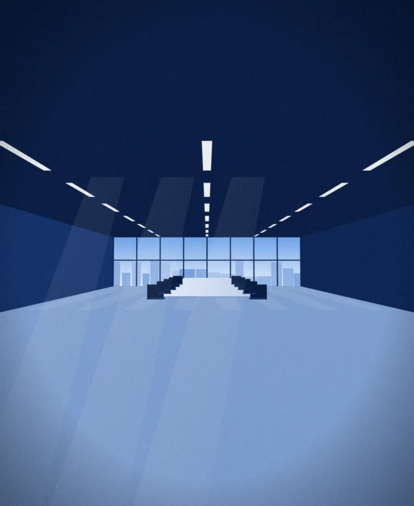
۰۴ پروژههای منتخب

مهندسی و معماری سازمانی· ۱۴۰۴
مدیریت طراحی، نظارت و راهاندازی یک مجتمع ۴۲ طبقه با کاهش ۲۸ درصدی هزینهٔ بهرهبرداری (نمونه).
مشاهدهٔ پروژهفناوری· ۱۴۰۴
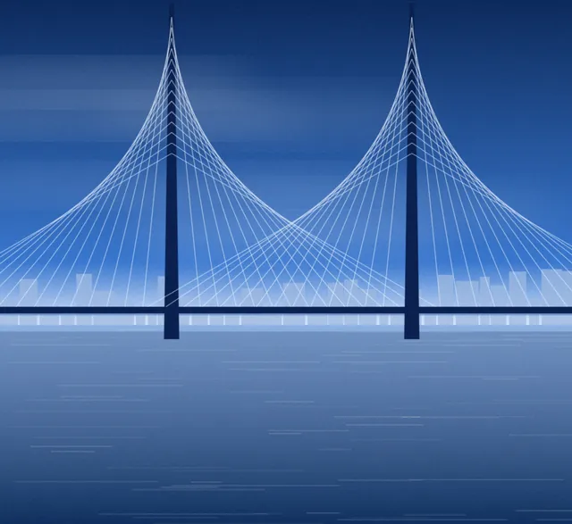
زیرساخت· ۱۴۰۳
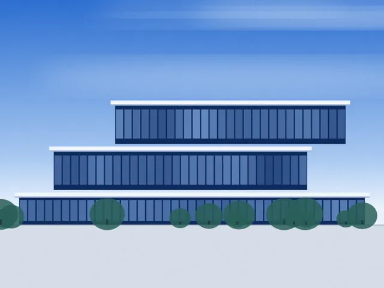
راهبرد· ۱۴۰۳
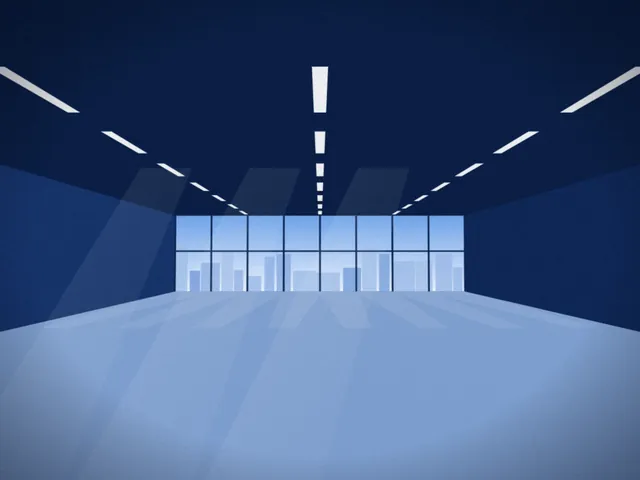
بهینهسازی· ۱۴۰۲
۰۵ فرایند همکاری
جلسهٔ کشف، بررسی وضعیت موجود و تعریف دقیق مسئله و معیارهای موفقیت.
خروجی: سند نیازمندیهامدلسازی گزینهها، برآورد هزینه و زمان و انتخاب مسیر با مشارکت شما.
خروجی: نقشهٔ راه و برآورداجرای مرحلهای با گزارش هفتگی، کنترل کیفیت و مدیریت ریسک.
خروجی: گزارش پیشرفتتحویل مستند، آموزش تیم و دورهٔ پشتیبانی تا پایداری کامل نتیجه.
خروجی: تحویل و SLA۰۶ مزیتها و نتایج
اعداد زیر نمونهاند و از پیشخوان قابل ویرایش هستند.
تجربهٔ اجرایی
پروژهٔ تحویلشده
رضایت مشتریان
متخصص تماموقت
یک مدیر پروژهٔ مشخص که در تمام مراحل پاسخگوی شماست.
هر پیشنهاد با تحلیل، مقایسه و برآورد ریسک همراه است.
داشبورد پیشرفت و گزارش هفتگی؛ بدون غافلگیری در پایان پروژه.
دورهٔ پشتیبانی تعریفشده برای اطمینان از پایداری نتیجه.
۰۷ دیدگاه مشتریان
«بزرگترین تفاوت آبیرا شفافیت بود. در هر هفته میدانستیم پروژه کجاست و چرا. تحویل نهایی دقیقاً همان چیزی بود که در جلسهٔ اول روی کاغذ آمده بود.»
«مهاجرت به زیرساخت جدید بدون حتی یک ساعت توقف انجام شد.»
«تیم آبیرا فقط مشاور نبود؛ در جلسههای فنی ما حضور داشت، سؤالهای سخت پرسید و تا لحظهٔ بهرهبرداری کنار ما ماند. گزارشهایشان را مستقیم به هیئتمدیره ارائه دادیم.»
«برای اولین بار یک پروژهٔ مشاوره را با شاخصهای عددی ارزیابی کردیم و نتیجه، بهبود ۲۸ درصدی بهرهوری بود.»
۰۸ مقالات
۰۹ پرسشهای متداول
مدت پروژه به دامنه و پیچیدگی بستگی دارد. پس از جلسهٔ اول، برآورد زمانی مرحلهبندیشده ارائه میشود. پروژههای مشاورهای معمولاً ۴ تا ۱۲ هفته و پروژههای اجرایی ۳ تا ۱۸ ماه زمان میبرند.
پس از تحلیل نیاز، پیشنهاد مالی شفاف و مرحلهای تهیه میکنیم. هر مرحله خروجی مشخص و قیمت مجزا دارد تا بتوانید در هر نقطه تصمیم بگیرید.
بله. بستههای محدودتر مثل ارزیابی اولیه و نقشهٔ راه برای شرکتهای رو به رشد طراحی شده است.
پیش از شروع، قرارداد محرمانگی امضا میشود. دسترسیها حداقلی و مستند است و پس از پایان پروژه، اسناد طبق توافق بایگانی یا حذف میشوند.
هر پروژه دورهٔ پشتیبانی تعریفشده، آموزش تیم شما و کانال ارتباطی مستقیم با مدیر پروژه دارد.
با دکمهٔ «درخواست مشاوره» فرم کوتاهی ارسال کنید؛ ظرف یک روز کاری با شما تماس میگیریم.
شروع همکاری
یک جلسهٔ کوتاه و بدون هزینه برای شناخت نیاز شما؛ سپس مسیر پیشنهادی را با هم بررسی میکنیم.
این پنل فقط برای بازبینی است. در قالب وردپرس، شدت موشن از Customizer تنظیم میشود. اگر سیستمعامل «کاهش حرکت» را فعال کرده باشد، موشن خاموش میماند.